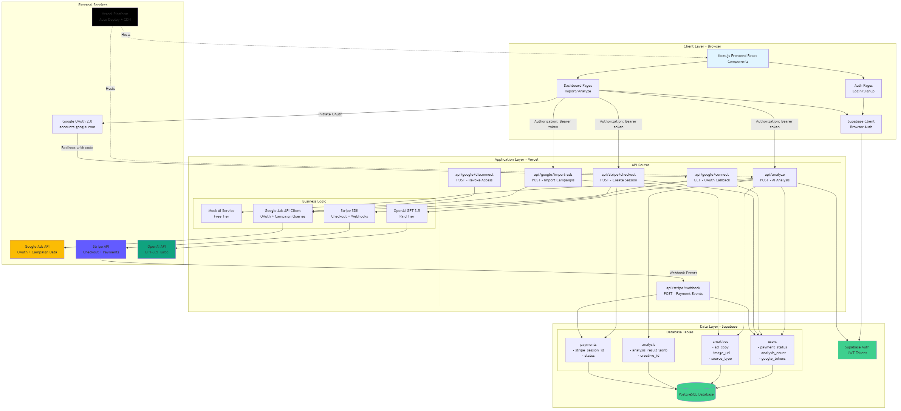
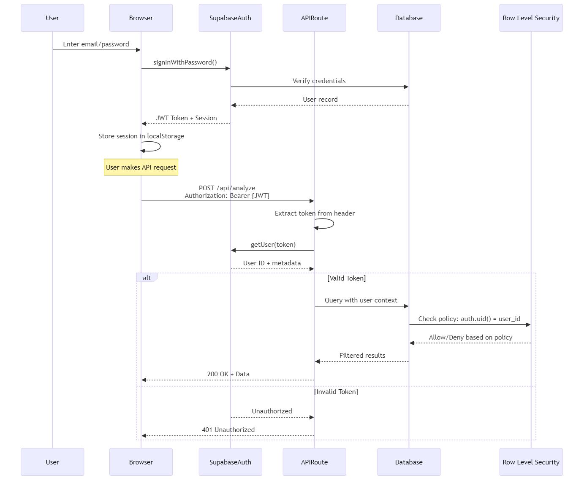
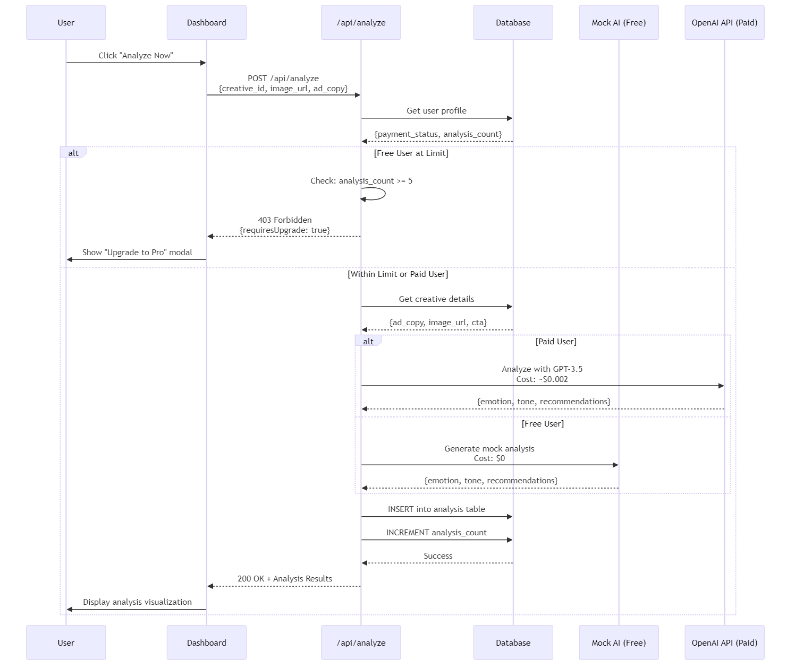
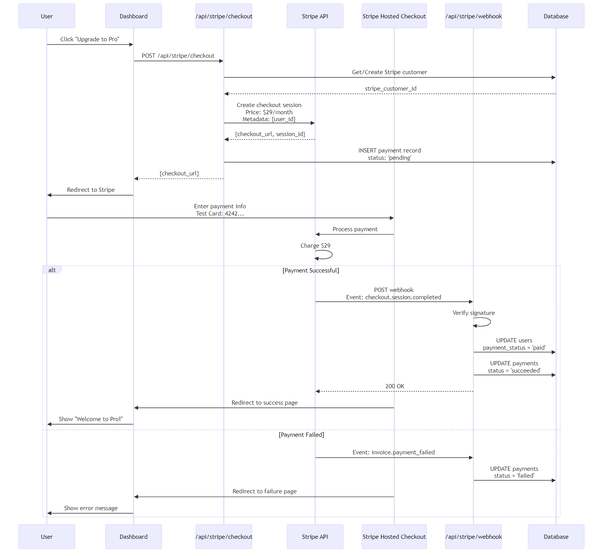
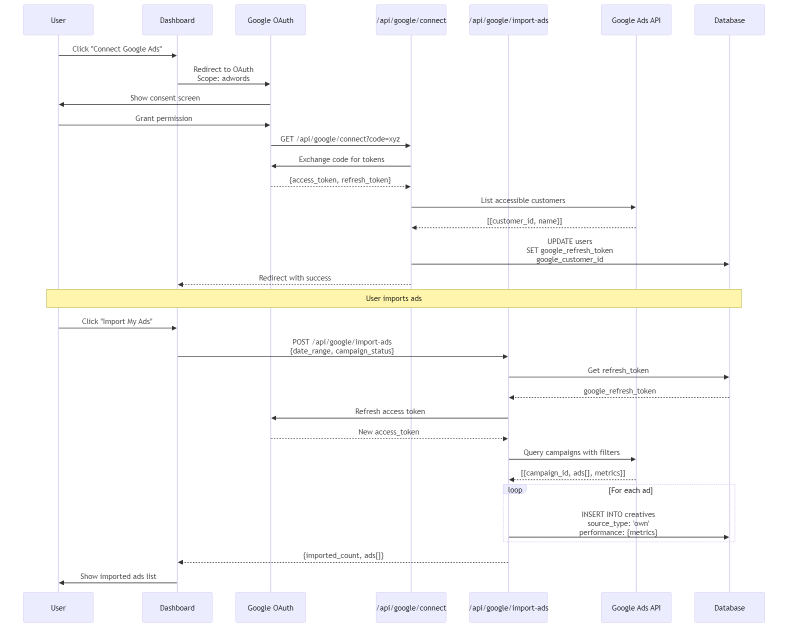
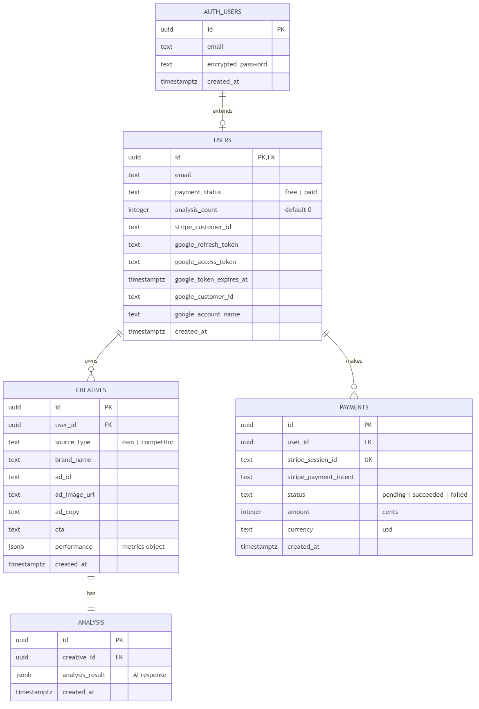
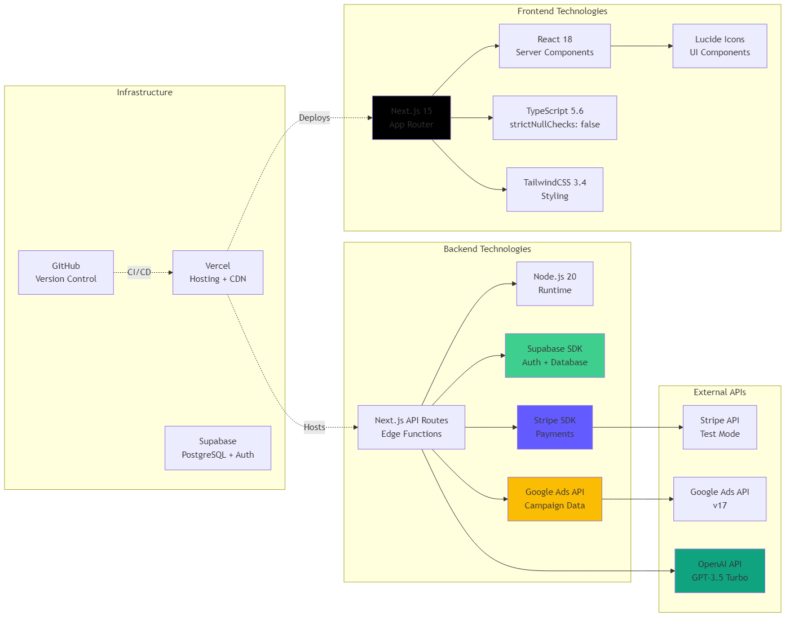
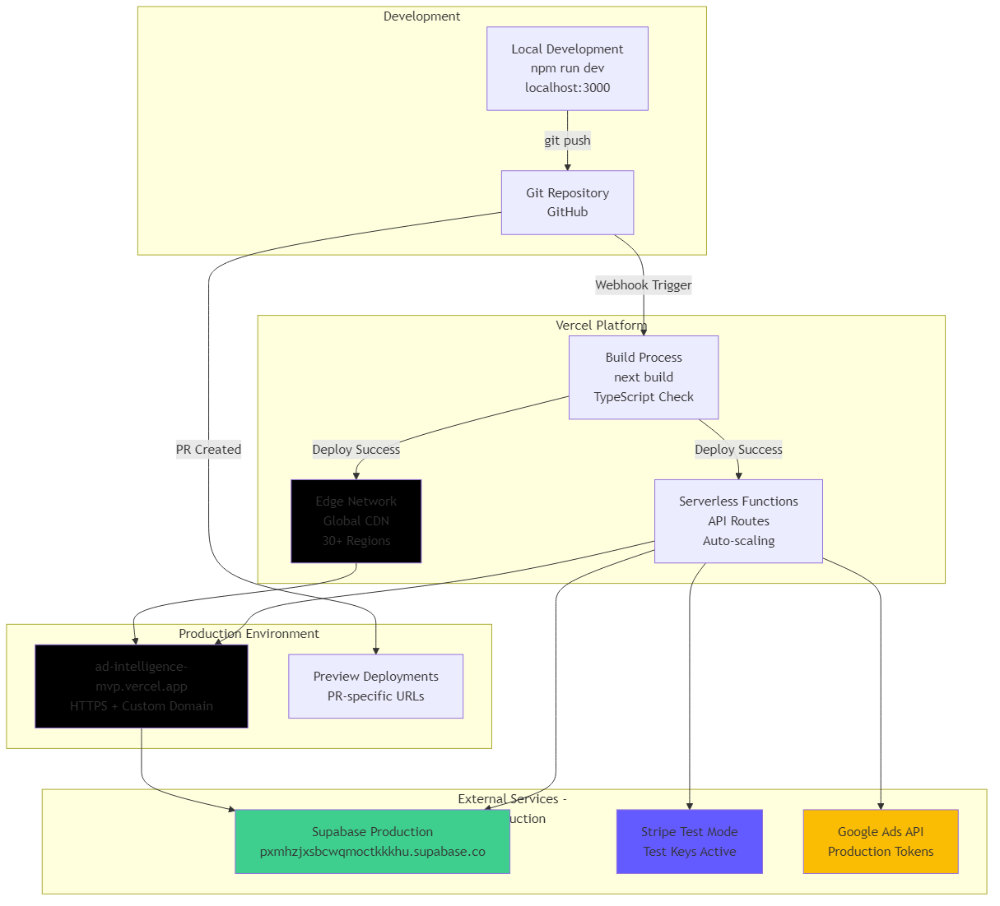
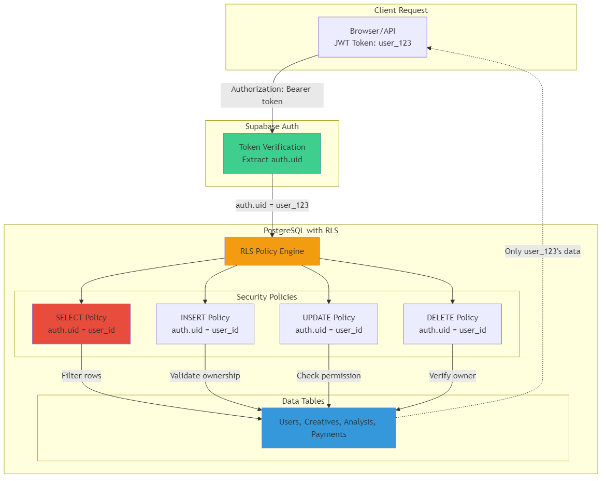
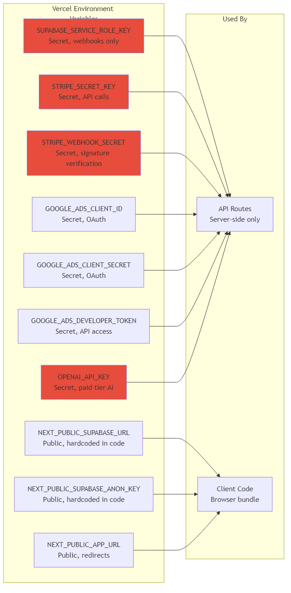

1. System Architecture Overview

Overview: Complete system architecture showing the client layer (Next.js frontend), application layer (Vercel Edge Functions with API routes), data layer (Supabase), and external services (Google Ads, Stripe, OpenAI). This diagram illustrates the full data flow from user interactions through API processing to database storage.
2. Authentication & Authorization Flow

Overview: Sequence diagram showing the authentication flow using Supabase Auth with JWT tokens. Demonstrates how users sign in, receive tokens, and how those tokens are validated on subsequent API requests. Includes Row-Level Security (RLS) policy enforcement at the database level.
3. AI Analysis Request Flow

Overview: Details the AI analysis workflow, showing how free users get mock analysis (no cost) while paid users receive real OpenAI GPT-3.5 powered insights. Includes limit checking for free users and the database operations for storing analysis results.
4. Payment & Upgrade Flow

Overview: Stripe payment integration flow from checkout session creation to webhook-based payment confirmation. Shows how the system creates a Stripe customer, generates a checkout session, processes payment, and updates user status via webhooks.
5. Google Ads Integration Flow

Overview: OAuth 2.0 integration with Google Ads API. Demonstrates the complete flow from user authorization through token exchange, campaign data retrieval, and storage of ad creatives in the database. Includes token refresh mechanism for long-term API access.
6. Database Schema & Relationships

Overview: Entity-relationship diagram showing all database tables, their fields, data types, and relationships. Includes the users table extended from Supabase auth, creatives for storing ads, analysis for AI results, and payments for transaction tracking.
7. Technology Stack

Overview: Comprehensive view of all technologies used in the platform: frontend (Next.js, React, TypeScript, Tailwind), backend (Node.js, API Routes, SDKs), infrastructure (Vercel, Supabase, GitHub), and external APIs (Stripe, Google Ads, OpenAI).
8. Deployment Architecture

Overview: Deployment pipeline from local development through GitHub to Vercel's global edge network. Shows the build process, serverless functions, preview deployments for pull requests, and connections to production external services.
9. Row-Level Security (RLS) Architecture

Overview: Database-level security implementation using PostgreSQL Row-Level Security policies. Shows how JWT tokens are verified, user IDs are extracted, and policies are enforced for SELECT, INSERT, UPDATE, and DELETE operations to ensure users can only access their own data.
10. Environment Variables Configuration

Overview: Configuration management showing public vs. secret environment variables, their usage in client-side code vs. API routes, and the security boundaries. Critical for understanding which credentials are exposed to the browser and which remain server-side only.